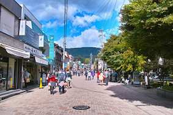
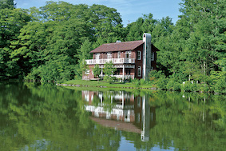
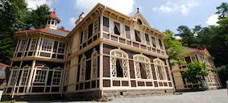
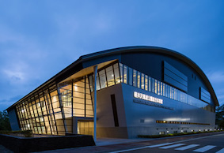
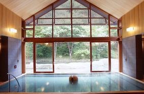
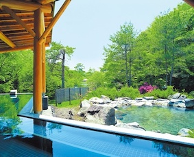

観光案内
[infomation]
アウトレット、旧軽井沢銀座、星野エリアなどアクセス抜群のLuranで軽井沢を満喫してください。
各種割引券もご用意がございます。お気軽にお声がけください。
旧軽井沢銀座
Pension Luranから車で約５分
軽井沢といえばココは外せません！旧軽井沢銀座のメインストリートです。50Mの通りに新旧さまざまなショップやレストランが軒を連ね、世界各国から観光客で連日賑わいます

軽井沢タリアセン
Pension Luranから車で約６分
タリアセンは、ウェールズ語で「輝ける額」を意味します。タリアセンは、軽井沢の南に位置する塩沢湖を中心として美術館、レストラン、ショップなどが集まる総合的レジャー施設です。

旧三笠ホテル
Pension Luranから車で約８分
軽井沢の鹿鳴館と謳われた木造西洋式ホテルとして、明治時代から64年間ホテルとして営業していた国の重要文化財です。シャンデリアや英国製タイルの洗面所など、当時最高級の設備を誇り、財務会や著名人の社交場として賑わいました。川のせせらぎと心地よい高原の風の中でティータイムをどうぞお過ごしください。

風越公園
Pension Luranから車で約７分
四季を通じてさまざまなスポーツが楽しめる軽井沢のスポーツ拠点です。春〜秋にかけてはテニス・水泳・サッカー・野球ができます。冬にはアイススケートやカーリングが楽しめます。体育センターなら天候に関係なく１年中体を動かすことができます。

星野温泉トンボの湯
Pension Luranから車で約６分
大正時代に開湯した源泉掛け流しの「美肌の湯」として有名な立ち寄り湯です。北原白秋や与謝野晶子もつかった古の湯に身を任せれば、時は遥か、想いは彼方へ流れていきます。また、宿に割引券がございますのでお声がけください

軽井沢千ヶ滝温泉
Pension Luranから車で約７分
四季を通して、それぞれ趣の異なる美しい風景と澄み渡るかけ流しの柔らかいお湯が自慢の立ち寄り湯です。木々のざわめきや鳥の囀り、燃えるような紅葉や純白の雪景色、美しい軽井沢の大自然に抱かれ、静かで穏やかな時間が過ごせます。
